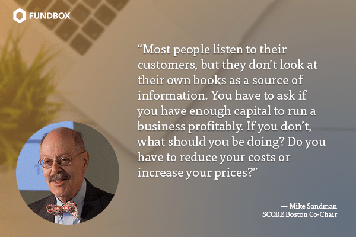
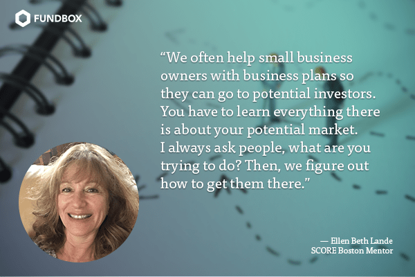
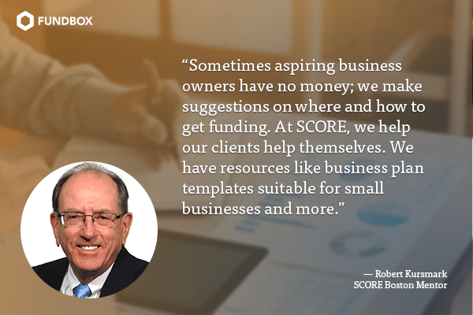
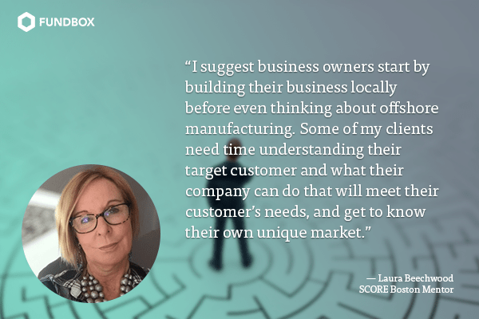
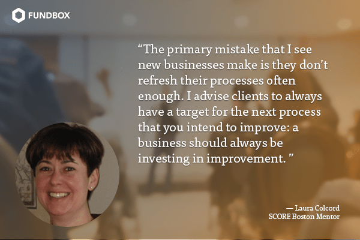

Top Advice for Business Owners from SCORE Executives
Many an entrepreneur begins their business ventures with boundless enthusiasm. Inevitably, challenges arise. Some will have their own money and family to help them. But most others will need outside help.
That’s where SCORE comes in. Founded nationally in 1964, its mentors range in age from working professionals to the retired. We recently visited SCORE Boston, the 20th chapter in the country, to chat with the experienced volunteers there and see what we could learn.
The volunteers at SCORE Boston agree that it’s very important to have a mentor. That makes sense, since about 90% of startups fail in the first two years, and of those that fail, many haven’t asked for or taken advice. Mentors can act as valuable sounding boards for evaluating ideas and offering guidance.
SCORE offers one on one mentorships and co-counseling (people from two different areas of expertise work with a client), nationwide. SCORE Boston provides marketing, finance, accounting, real estate and legal advice.
We asked the volunteers at Boston SCORE what advice they typically give their clients. Here’s what they said.

Mike Sandman, SCORE Boston Co-Chair
His Specialties: Management Consulting and Competitive Intelligence
Most people listen to their customers, but they don’t look at their own books as a source of information. You have to ask if you have enough capital to run a business profitably. If you don’t, what should you be doing? Do you have to reduce your costs or increase your prices?
We use a cash flow estimate to help them with this. You can look at what your competitors are doing; your customers and suppliers can also provide this information. You can learn how other companies use the internet to sell, who their suppliers are, what kind of advertising and promotion they do and how well it works, and how they position themselves in the market. You can ask a supplier in a specific industry who their customers are and ask them for references.
To learn what your competitors are doing, if you run a business in Boston, you can talk to someone who’s in the same business in Pittsburgh or Chicago that doesn’t compete with you.

Ellen Beth Lande
Her Specialties: Consumer Products and Entrepreneurship
I see people paying more attention to how to present their product in social media and less attention to does this product or service work. That’s bad news if they haven’t found their market or customer base yet.
Their product must be correctly priced and they must pay attention to the cost of goods sold. It’s one thing to buy small batches at high prices in anticipation of selling large quantities at lower prices, but you have to have adequate financial backing and good market data to do that.
We will point people in the right direction for all that. We often help small business owners with business plans so they can go to potential investors. You have to learn everything there is about your potential market. Some discover they don’t really have a viable business, or there’s no way they can do it by themselves, or they have to scale it down, and on and on.
It’s important to do as much research as you can. You also shouldn’t be overly concerned about someone stealing your idea (except in technology), because if you don’t trust anyone, you don’t get enough information and advice about your idea. That can lead to huge mistakes. If you have intellectual property that needs protecting, find the right legal ways to do it (e.g., trade marking, copywriting, and patenting).
I always ask people, what are you trying to do? Then, we figure out how to get them there.

Robert Kursmark
His Specialty: Product Design and Development/Engineering Leadership
I recommend that my clients put a business plan together and work part-time in a similar business [before going out on their own]. You should tell your boss that you want to learn the ropes, because someday you would like to start a similar business; ask for mentoring about how to run the business.
Sometimes aspiring business owners have no money; we make suggestions on where and how to get funding. At SCORE, we help our clients help themselves; we aren’t allowed (nor have the time) to do the work for them. We have resources like business plan templates suitable for small businesses, books on how to write a business plan and various presentation packages on skills business owners need to develop. We hold about three workshops a week open to the public on topics like: how to start a small business; elevator speeches; understanding financial statements;and how to use QuickBooks.
When we meet with new clients, we ask what kind of business entity you want to be (e.g., S corporation, LLC or Sole Proprietorship). We always give them homework to do before their next appointment, like drafting a business plan or estimating their business start-up expenses by category.

Laura Beechwood
Her Specialties: Manufacturing, Marketing and Strategy
My clients don’t always understand cost of goods and supply chain management. They are all rushing to have product manufactured in China but they don’t have a clue about prototype manufacturing or what is really involved in offshore production and the quality control aspects of this type of manufacturing.
In my experience, the biggest problem in offshore production is finding reputable and consistent producers who will deliver product on time and in small enough quantities. Most of my clients are not set up for large product runs where they are getting products shipped to them in large quantities. For this reason, I don’t see China or India to be a viable option for them. They are usually very surprised to find out how expensive a patent or a production tooling would be.
I suggest they start by building their business locally before even thinking about offshore manufacturing. Some of my clients need to focus more on what the market wants. They need more time understanding their target customer and what their company can do that will meet their customer’s needs. They have to decide how with a limited budget they can get known to their own unique market.
I tell businesses to have a business plan and a marketing plan with their target market clearly defined. I also advise them to get a good, honest accountant who will tell them the truth about their business. I tell them to invest in marketing and sales and learn from the mistakes of your mentor while they were building their business.

Laura Colcord
Her Specialty: Process Improvement
The primary mistake that I see new businesses make is they don’t refresh their processes often enough. Every year, elements in the business environment change: customers, competitors, technologies, employees. If you don’t change your processes to keep up, your processes become outdated and inadequate, eventually resulting in subpar service, high costs, or an inefficient company. This can happen in businesses of all sizes.
I advise clients to always have a target for the next process that you intend to improve: a business should always be investing in process improvement.
Hema Kailasan
Her Specialty: Finance
A lot of my clients are unaware of a lot of resources that they can access for free. I know it can be hard to find these resources unless someone shows them. I always advise businesses to pay it forward. Get involved and mentor someone!
Read more from SCORE:
We dove in to the SCORE Spring 2018 Report on the Financial State of Women-Owned Businesses
Ready for more?
Apply for funding and find out if you qualify today